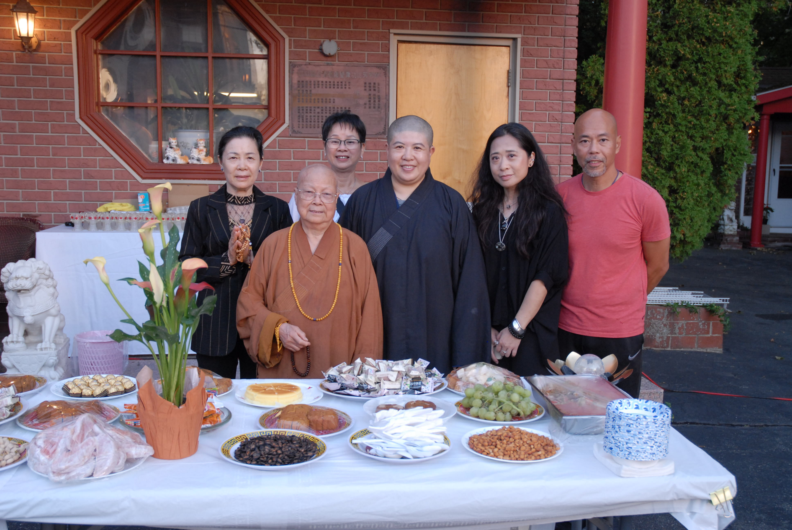
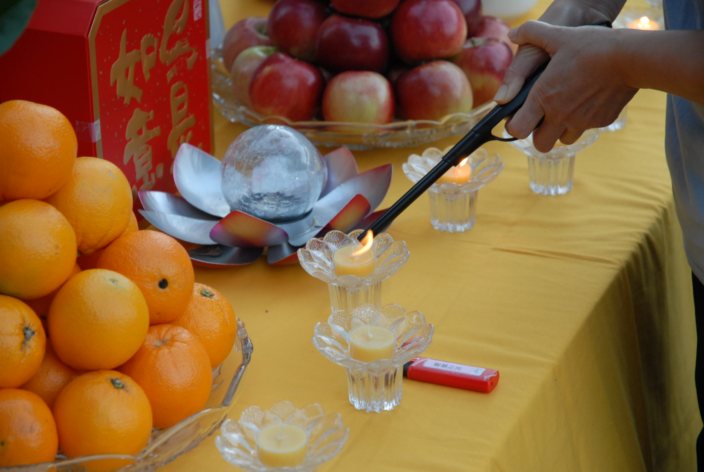
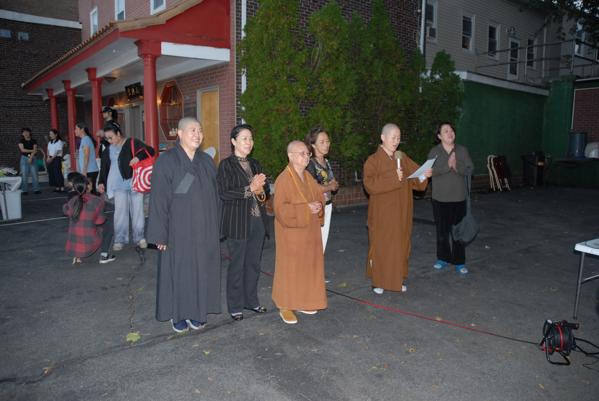
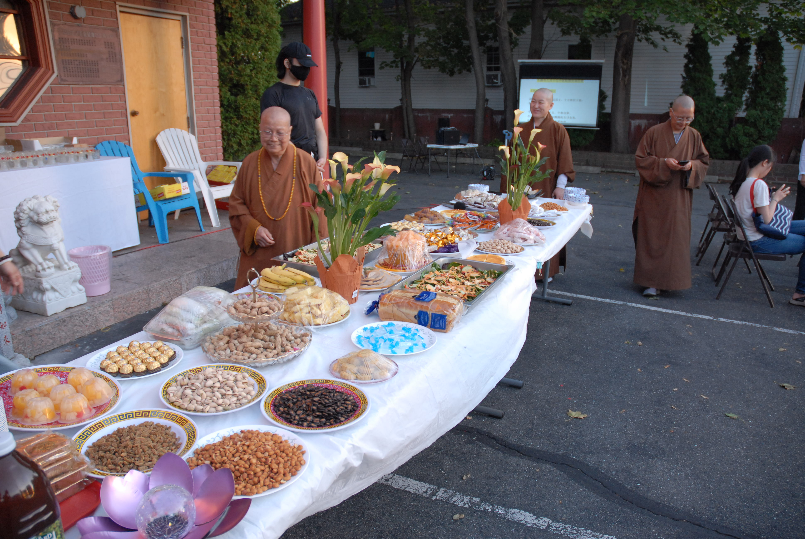
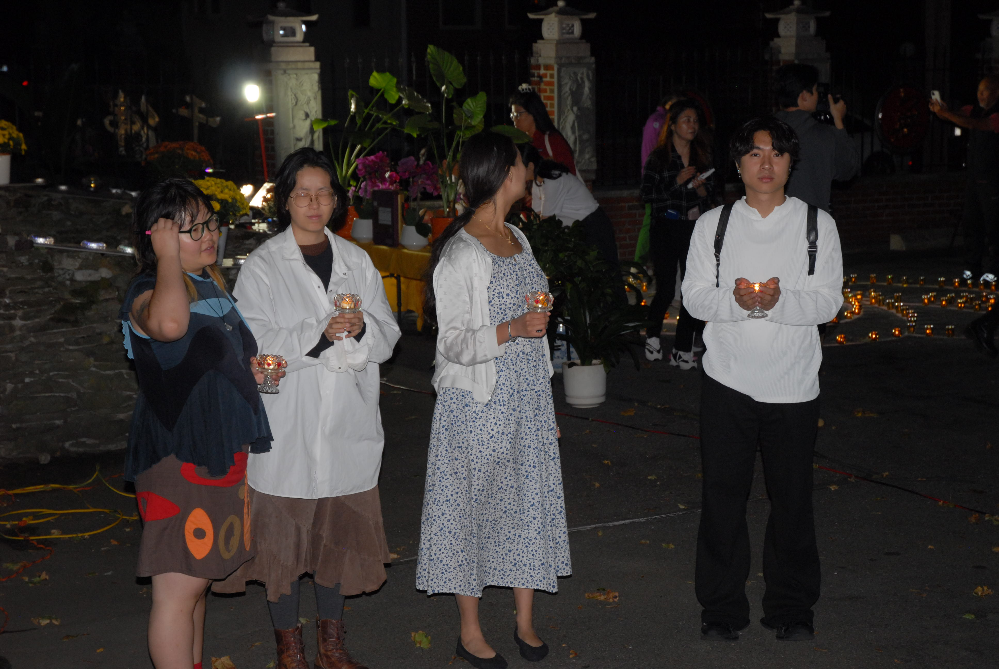
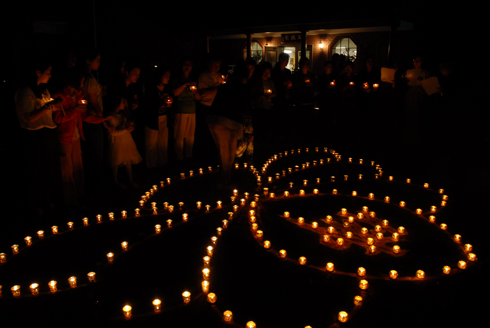
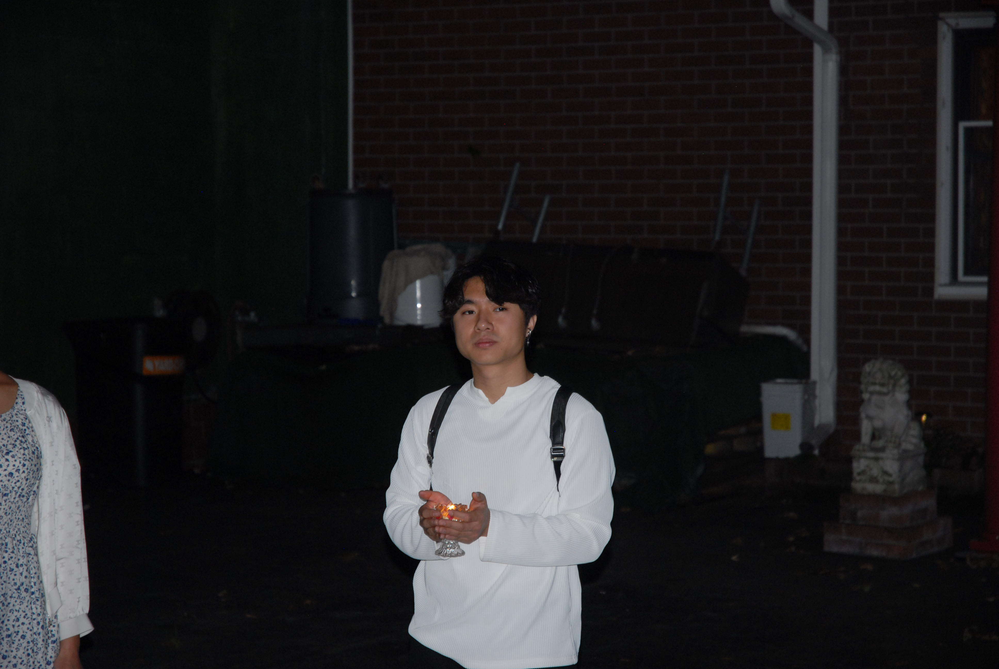
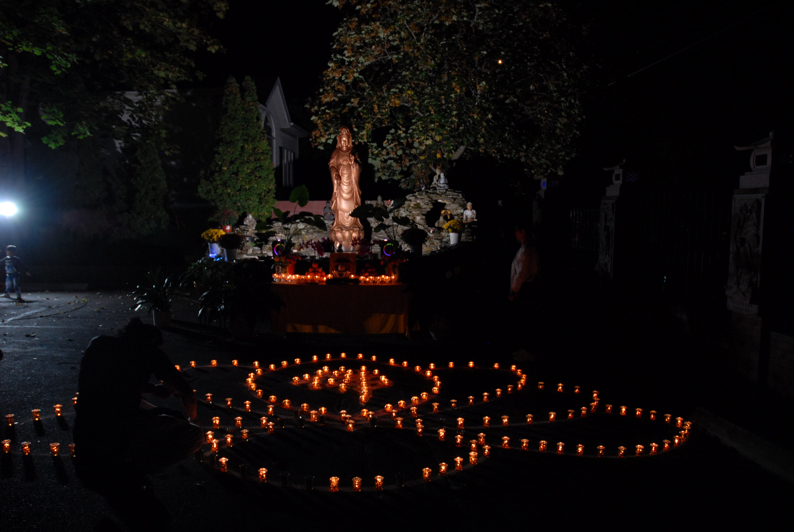
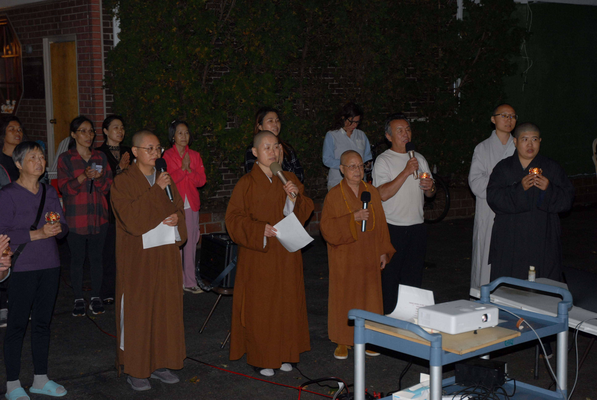
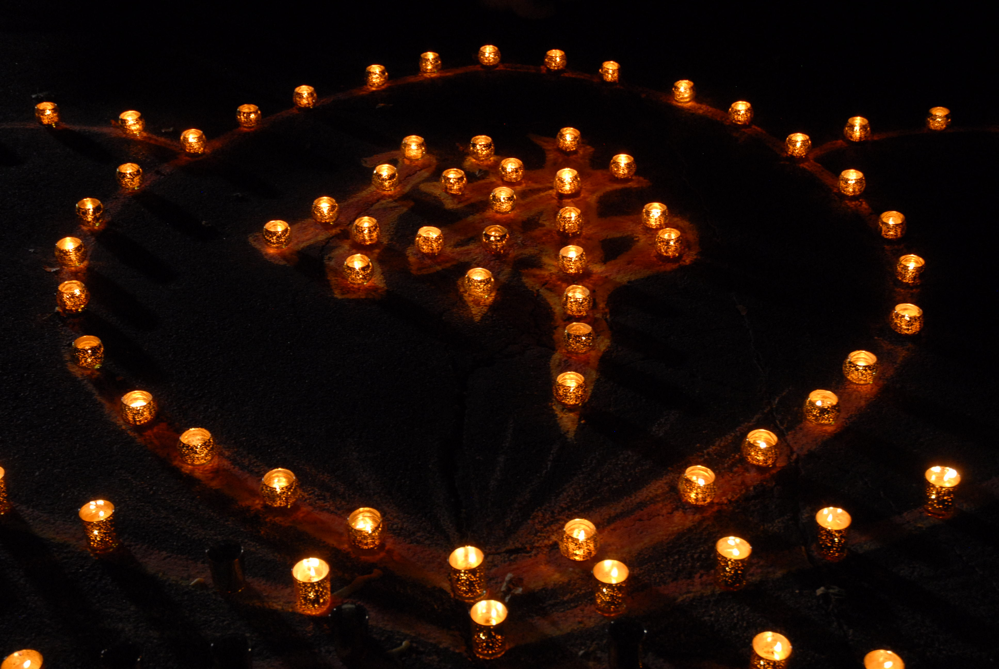

千佛寺中秋节点灯祈福活动圆满举行
Zhenjun Sun · 2025年10月6日
明月共照，心灯同明

金秋送爽，桂花飘香。2025年10月6日（农历八月十五），波士顿千佛寺在一片祥和宁静中举行了盛大的中秋节点灯祈福活动。活动吸引了众多信众及社区居民前来共襄盛会，在明月与灯光交织的夜晚，祈愿世界和平、家庭团圆、身心安乐。
明月升起，心灯初亮

傍晚时分，夕阳渐隐，寺院的庭院内灯火初起。信众们陆续到来，脸上洋溢着节日的喜悦。千佛寺为此次中秋活动精心布置了场地：香案上摆满了新鲜的瓜果蔬菜、清香的花卉与烛灯，寓意丰收与感恩；广场中央的佛灯台上，整齐排列着百余盏莲花灯，等待被点亮的那一刻。

随着暮色笼罩，寺院钟声响起，活动正式开始。主持法师简短开示，提醒大家在祈愿的同时，也要点亮内心的智慧与慈悲之灯。
瓜果供佛，祈愿圆满

千佛寺一向重视节日仪轨与文化传承。此次活动特别准备了丰富的瓜果、蔬菜与五谷供品，象征秋收的喜悦与生命的丰盈。志工们一早便开始布置，将每一份供品精心摆放，既美观又寓意深远。

在法师的引导下，信众们一同诵经，以清净的心念供养三宝。佛号声此起彼伏，香烟缭绕，气氛宁静而肃穆。许多人表示，在异乡度过这样的中秋夜，感受到的不只是节日的仪式感，更是一种心灵的慰藉。
众信众点灯祈福，心愿随光远行
夜色渐浓，最令人期待的“点灯祈福”环节正式开始。

法师带领信众依次上前，以恭敬之心点燃手中的莲花灯。灯盏一点一亮，汇聚成片片光海，映照出每一张虔诚的面庞。有人为家人祈福平安，有人为事业祈求顺遂，也有人默默祝愿天下太平。

一位年轻的留学生在点灯后低声说道：“我离家万里，但在这里点灯的那一刻，突然觉得离家很近。”
随着灯光闪烁，整个寺院弥漫着祥和与温情。风吹过佛堂的幡旗，灯火摇曳，宛如千颗心在夜色中共鸣。
诵经与许愿：让心静下来

灯火通明中，寺庙成员再次带领众人诵经祈愿。经声悠长，节奏平稳，仿佛在夜空下编织出一张安宁的心网。
诵经结束后，进入许愿环节。这些祝愿随同烛火一同闪烁。灯光之中，愿望似乎被月色托起，传向更远的地方。
“中秋是团圆的节日，也是回望自心的时刻。”一位参加活动的信众感慨道，“在这里，我感到的不只是宗教仪式，而是一种人与人之间温柔的连接。”
颂歌与笑颜：圆满的夜

活动接近尾声时，寺庙成员齐声唱起颂歌。悠扬的旋律回荡在夜空下，与佛灯的光影交织成一幅温暖的画面。
现场的信众也自发合唱，歌声中带着喜悦与感恩。有人合十祈愿，有人默默闭目微笑，更多的人选择在灯光下合影留念。
那一刻，所有的距离都被拉近。月亮高悬，灯火辉映，笑声、颂歌与祝福交织在一起，为这个中秋夜画上了圆满的句号。
文化与信仰的延续
波士顿千佛寺自建寺以来，一直致力于弘扬东方佛教文化，服务本地社区。中秋节点灯祈福活动已成为寺庙的传统，每年都吸引越来越多的中外信众参与。
活动不仅让华人社区重拾节日的归属感，也让更多来自不同文化背景的人士了解东方传统节日的精神内涵。
千佛寺住持在活动结束后表示：“中秋不仅是团圆的象征，更是慈悲与智慧的延续。我们希望通过这样的活动，让更多人找到内心的宁静与善意。”
明月千里，心灯不灭

夜深了，灯光依旧闪烁。信众陆续离开，但许多人的脚步仍不愿太快，他们回望着灯海与月色，仿佛不舍这份宁静与温柔。
千佛寺的中秋节点灯祈福活动，在光与愿的交融中圆满结束。而那一盏盏灯光，也将继续照亮每一个心怀善意的角落。